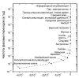

Страницы авторов "Тёмного леса"
Пишите нам! temnyjles@narod.ru
Историческая психология и социология истории, 2014, т.7, N1, с.75-91
Как показано независимыми расчётами, около середины XXI века в развитии мировой цивилизации может наступить фазовый переход такой крутизны, что её дальнейшее существование оказывается под вопросом. В статье исследуются напряжения глобальной геополитической системы на современном этапе истории и некоторые условия её устойчивости. Автор приводит аргументы в пользу того, что Россия в текущем веке способна сыграть такую же сохраняющую роль, какую сыграл СССР в XX веке, а также предлагает необходимые для этого корректировки в концептуально-политическом и информационном обеспечении.
Ключевые слова: Мегаистория, XXI век, полифуркация, аттракторы, геополитика, система, устойчивость, Россия, национальная идея, патриотизм, космополитизм, мессианство.
Поколение живущих сегодня людей можно смело считать самым значительным из всех, что когда-либо жили на нашей планете.
Митио Каку` [2013, с.503]
В последние годы российские политики и политологи всё чаще говорят о необходимости национальной, даже государственной идеологии, хотя существование последней недвусмысленно запрещено Конституцией РФ. Запрет имеет различные резоны, в том числе и этимологический.
Термин идеология введён в современные европейские языки группой французских материалистов XVIII века, безуспешно пытавшихся сформировать чисто физиологическую "науку о мышлении". Проведя параллель между мозгом и желудком и представив мышление как "производство мозгового экскремента", незадачливые "идеологи" сами произвели образец бредового наукообразия, а пришедший к власти Наполеон Бонапарт придал этому слову сугубо уничижительный оттенок. С тех пор "идеология" означает произвольные теории, предназначенные для обоснования интересов какой-либо социальной группы в ущерб интересам других групп. Как "ложное сознание" определили идеологию и основоположники марксизма.
В России Г.В. Плеханов придумал, а В.И. Ленин подхватил словосочетания "научная (истинная) идеология", не заметив, что используют оксюморон (тексты К. Маркса и Ф. Энгельса, где трактуется понятие "идеология", тогда ещё не были опубликованы). Пытаясь теперь реанимировать недоразумение советской эпохи, мы рискуем обратить жизненно важную задачу формулировки обоснованных национальных стратегий в очередной фарс.
Добавим, что Россия - не первая из мировых держав, столкнувшаяся с проблемой дефицита стратегических идей. Американские публикации 1950-60-х годов пестрят указаниями на то, что США проигрывают конкуренцию на международной арене из-за отсутствия привлекательных альтернатив коммунистической идеологии. Дуайт Эйзенхауэр и его преемники учреждали "Комиссии по выработке национальной цели", а советские газеты иронизировали над "неуклюжими потугами" загнивающих буржуазных идеологов.
Между тем Комиссии, объединившие интеллектуалов различных специальностей, сконструировали набор ярких, доступных для обывателя ценностей, а также технологии их пропагандистского использования в странах "первого", "второго" и "третьего" мира. Со своей стороны, "научная идеология" к тому времени успела закоснеть в постулированной монополии "объективной истины", утерять прежнюю "наступательность" и лишь запоздало откликалась на рекламные афиши "американского образа жизни", "наведения мостов" и т.д.
Сегодня Россия испытывает острую нужду в объединяющих идеях, способных вместе с тем обеспечить её политике широкое сочувствие во внешнем мире. Поиск таких идей в заветных преданиях ветхой старины и средневековых религиях оказывается заведомо контрпродуктивным, усиливает изоляцию и отставание. Реалистичные политические и экономические стратегии должны строиться в контексте прогнозов и сценариев развития мировой цивилизации, тем более что, согласно новейшим научным данным, обозримое будущее выглядит весьма нетривиально. Тезисно рассмотрим эти данные, которые подробно изложены, аргументированы и снабжены обильным ссылочным аппаратом в книгах [Назаретян 2008, 2014].
Самые удивительные открытия в науке конца XX - начала XXI века связаны с междисциплинарным исследовательским проектом, который параллельно формировался на разных континентах и получил синонимичные названия: Универсальная история, Мегаистория, Большая история (Big History) и т.д. Речь идёт о построении интегральной модели прошлого, включая космофизическую, биологическую и социокультурную стадии развития Вселенной. Мегаисторические модели перекликаются с ещё одним междисциплинарным проектом - единой теорией самоорганизации, которая в Германии и в России чаще всего обозначается как синергетика{1}.
Выделю три наиболее примечательных обстоятельства, имеющих отношение к глобальным перспективам цивилизации.
Во-первых, на всех стадиях универсальной эволюции прослеживаются сквозные векторы, так что совокупная сложность Метагалактики последовательно возрастала. Это эмпирическое обобщение вступило в видимый контраст с законом роста энтропии, который считается основой необратимости; причинная связь между "космологической стрелой времени" и "термодинамической стрелой времени" составляет ключевую проблему естественнонаучной картины мира.
Во-вторых, обнаружилось, что динамика векторных изменений непостоянна: миллиарды лет после Большого Взрыва космическая эволюция замедлялась, но с образованием тяжёлых элементов замедление сменилось ускорением. {2} Последняя тенденция отчётливо зафиксирована в истории нашей планеты. Серией независимых расчётов, проведённых учёными разных специальностей в Австралии, России и США, показано, что на протяжении 4.5 млрд. лет эволюция биосферы и общества ускорялась в соответствии с простой логарифмической формулой. Ни космические и геологические катаклизмы, ни появление на Земле людей с их свободой воли и вечными безрассудствами не изменили эту преемственную тенденцию: временны`е периоды между глобальными катастрофами (с последующими качественными усложнениями био- и антропосферы) сокращались в убывающей геометрической прогрессии. Показано также, что на каждом фазовом переходе планетарная эволюция могла завершиться крахом или "зависанием" с последующей фазой вырождения и, согласно общесистемному закону осуществления всех возможных событий, во Вселенной должны быть планеты, где развитие жизни или общества оборвалось на каждой из переломных фаз. На Земле во всех случаях реализовались "прогрессивные" сценарии - и только поэтому мы живём в "постиндустриальной" цивилизации.
В-третьих, при экстраполяции в будущее около средины текущего столетия гиперболическая функция исчерпывается, т.е. кривая обращается в вертикаль, скорость эволюционных изменений устремляется к бесконечности, а интервалы между фазовыми переходами - к нулю (рис.1). В математике это называют сингулярностью, за которой должна наступить фаза полифуркации - смена миллиардолетних тенденций.
|  | Рис.1. Масштабная инвариантность распределения биосферных фазовых переходов во времени (по [Панов 2008]). |
Учёные и философы обсуждают, какая же предметная реальность скрывается за этим математическим выводом [Singularity... 2012; Nazaretyan 2014]. По всей видимости, на горизонте грандиозный перелом в эволюции общества и природы, сопоставимый с появлением жизни. Согласно оценкам, полученным с использованием синергетических моделей и современных методов глобального прогнозирования, за этим могут последовать а) обвал планетарной антропосферы (простой аттрактор); б) временная стабилизация на пике возможной сложности (горизонтальный странный аттрактор); в) прорыв в новую - космическую фазу эволюции (вертикальный странный аттрактор).
Принципиальная возможность третьего (прорывного) сценария теоретически показана в новейшей астрофизике и подтверждена психологией творчества. В естественнонаучных публикациях последних полутора десятилетий получил подробное обоснование вывод о том, что сознание представляет собой "космологически фундаментальный факт" и масштабы распространения разумной деятельности за пределы Земли ("ноосферизация космоса") не ограничены известными физическими законами. Со своей стороны, гештальтпсихологи показали, что эвристические возможности творческих решений сдерживаются исключительно рамками принятой модели: всегда возможна метамодель, в которой прежние неуправляемые константы превращаются в управляемые переменные.
Таким образом, перспектива Метагалактики определяется перспективой развития разума. Более того, имеются основания полагать, что эра спонтанного роста сложности Вселенной близится к завершению и, если дальнейшая эволюция в принципе возможна, то она может быть только сознательно управляемой. Наконец - что планеты, достигшие столь высокого уровня развития, становятся невольными участниками универсального естественного отбора цивилизаций: немногие (возможно, единственная), сумевшие выдержать неограниченный рост инструментального потенциала, выйдут на космическую стадию, а прочие останутся расходным материалом универсальной эволюции - на них реализуются все неблагоприятные аттракторы и сценарии.
Справиться с неограниченно растущим технологическим могуществом может та цивилизация, которая сформирует соразмерные по эффективности механизмы самоконтроля: как показывают историко-социологические исследования, именно рассогласование технологических возможностей с качеством культурно-психологических регуляторов всегда провоцировало антропогенные кризисы, катастрофы, а во многих случаях - саморазрушение социальных организмов (см. далее). При этом один из векторов социально-исторической эволюции составляет последовательное смещение ядра причинно-следственных зависимостей в сферу субъективной реальности, и, в частности, по мере развития общества удельный вес антропогенных катастроф по сравнению с катастрофами внешнего происхождения неуклонно возрастал. Соответственно, системные свойства антропоценозов во всё большей мере определялись ментальными матрицами управляющей подсистемы - характером массового сознания. И теперь сценарии развития Земной цивилизации за порогом прогнозирования упираются в вопрос о том, успеет ли сознание вырабатывать средства саморегуляции, адекватные технологиям, развивающимся в режиме небывалого ускорения.
Стержневой глобальной проблемой XXI века становится смысловой вакуум. В стремлении заполнить его люди обращаются к религиозным и квазирелигиозным идеологиям (конфессиональный, национальный и прочий фундаментализм), которые построены в ментальной матрице "они-мы", разделяя мир на своих и чужих, так что образ врага искони служил фактором групповой консолидации [Поршнев 2010]. При этих обстоятельствах условием сохранения планетарной цивилизации в XXI веке становится способность разума вырваться из оков макрогрупповой идентичности и освоить стратегические смыслы в дискурсе планетарного мышления, свободного от разобщающих идеологий.
С учётом обозримой перспективы "национальные идеи" становятся эффективными в той мере, в какой они строятся не на патриотическом, но на космополитическом основании. А именно: что способна сделать та или иная страна для обеспечения жизнеспособности планетарной цивилизации.
Чтобы лучше понять глобальные напряжения в политическом раскладе, напомним ещё одно положение теории систем, а для этого воспользуемся хрестоматийными примерами из экологии.
В 1950-х годах, когда системно-экологические представления не были достаточно разработаны, в СССР прошла массовая кампания по отстрелу волков. В результате опустевшая ниша стала заполняться одичавшими псами, которые оказались гораздо опаснее. И справиться с ними было труднее: псы, в отличие от волков, не боялись огня, верёвки и прочих человеческих хитростей и, главное, активно ненавидели людей. Избавляться от собачьих стай удавалось, только вернув в нишу её "законных" хозяев - волков.
В Китае организовали массовое истребление воробьёв, надеясь тем самым уберечь посевы. Но с исчезновением воробьёв чрезвычайно размножились насекомые вредители - и это привело к гибели агроценозов.
Поучительные аналогии такого рода помогают выявить пустующие ниши в глобальной политической системе, вытекающие из этого угрозы и опасности. Подчеркнём, что два последних понятия, часто используемые как синонимы, в психологии отчётливо различаются. Угроза - всякий фактор, способный нанести ущерб интересам (потребностям) субъекта. Опасность - величина, определяемая отношением угрозы к готовности субъекта ей противостоять. С изменением психологических установок растущая угроза может сопровождаться снижением опасности и наоборот{3}.
Анализ системной зависимости между технологической мощью, качеством культурно-психологической регуляции и внутренней устойчивостью общества раскрывает динамику угроз и опасностей в исторической развёртке, обобщённо представленную моделью техно-гуманитарного баланса. Новые технологии обычно несут с собой угрозу и со временем оборачиваются катастрофическими эффектами, которым предшествует ощущение всемогущества и безнаказанности - предкризисный синдром. Социумы, не сумевшие своевременно сбалансировать инструментальное могущество равноценными гуманитарными регуляторами, подрывали природные и/или геополитические основы своего существования, а дальнейшее историческое развитие обеспечивали конкуренты, успешно прошедшие фазу культурно-психологической "притирки". Вследствие этого драматического отбора, с ростом убойной мощи оружия и демографической плотности коэффициент кровопролитности общества (отношение среднего числа убийств в единицу времени к численности населения) на протяжении тысячелетий нелинейно, но последовательно сокращался. Этот парадоксальный факт, выявленный расчётами нашей группы, подтверждается данными, которые получены немецкими, английскими и американскими исследователями [Pinker 2011].
После того как притирка состоялась - но только после этого! - даже самое разрушительное оружие превращается в жизнесберегающий фактор. Сравнительно недавно так произошло с ядерным оружием, которое полвека назад грозило обвалить мировую цивилизацию, но предотвратило "горячую" фазу войны между сверхдержавами (хотя на локальных фронтах "Холодной" войны погибло в общей сумме до 25 млн. человек); в последующем с появлением у Индии и Пакистана атомных бомб регулярные вооружённые столкновения между ними прекратились. В прежние эпохи ограничителями физического насилия становились, в порядке убывания, огнестрельное, стальное, бронзовое, дистанционное оружие, хотя появление каждого из них первоначально вызывало всплески кровопролития и отсекало социумы, не справившиеся с образовавшимися дисбалансами.
Возвращаясь к Новейшей истории, отметим, что мировая политическая система достигла максимальной устойчивости к концу 1970-х годов. Угроза атомной войны сохранялась, но опасность перерастания "Холодной" войны в горячую фазу существенно снизилась по сравнению с предшествовавшим десятилетием: категорическая недопустимость атомного конфликта успела опуститься с уровня критического понимания на уровень массового подсознания. Запрет на ядерные испытания в атмосфере, аквасфере и космосе добросовестно соблюдался сверхдержавами; даже Франция и Китай, не подписавшие Московский договор 1963 года, сворачивали взрывы под давлением общественного мнения. В первой половине 70-х годов американская дипломатия ещё пыталась "продавить" согласие на возможное использование тактического атомного оружия, но натолкнулась на жёсткое противодействие советского правительства (за что министр иностранных дел А.А. Громыко получил у западных партнёров прозвище "Мистер НЕТ") - и тактические боеголовки были окончательно приравнены к стратегическим.
Теперь спецслужбы и родственные им учреждения противостоящих блоков, устроившись на хлебных должностях, рутинно занимались взаимными провокациями и взращивали для этого "непримиримых бойцов" (среди которых были и по-настоящему убеждённые самоотверженные герои) в стане противника, а пропагандисты темпераментно обличали вражеские происки. Но среди граждан сверхдержав всё меньше оставалось тех, кто серьёзно верил в мировую коммунистическую революцию или во всеобщее торжество либеральной демократии. При этом, правда, гибкая рыночная экономика легче адаптировалась к снижению идеологического пафоса, тогда как "командная" экономика, лишённая внутренних рычагов и построенная на мотивациях энтузиазма и страха, неизбежно слабела с размыванием образа врага и всё более зависела от сырьевого экспорта. К тому же обнаружилось, что мобилизационная экономика хороша для количественного наращивания производства, но, в силу ряда психологических механизмов, препятствует качественному развитию и тормозит научно-техническую революцию.
Об экономической обречённости чиновничьего социализма тогда догадывались лишь наиболее проницательные аналитики, а в целом сложившиеся политические отношения выглядели застывшими на долгую перспективу. Но, как следует из синергетической модели, высокоорганизованная система, в норме стремящаяся к устойчивости, по достижении очень высокого её уровня начинает произвольно отклоняться от стабильного состояния ("провокация неустойчивостей"). Американские лидеры, давно мечтавшие устроить Советскому Союзу "свой Вьетнам", добились-таки вожделенной цели: операция по заманиванию советской армии в Афганский конфликт - едва ли не самый блестящий успех ЦРУ за всю его историю - раскрутила новый виток "Холодной войны".
Почему поддалось на уловки противника геронтократическое (состоящее из сильно постаревших деятелей) правительство СССР и чем при этом руководствовалось - отдельный вопрос, которого здесь касаться не станем. Конечно, ни на Западе, ни на Востоке никто не думал, что так начнётся завершающий акт в драме советской истории, а в США и не было влиятельных сил, по-настоящему заинтересованных в развале СССР{4}.
В процессе "перестройки" оживились надежды на образование многополярного мира, свободного от политических конфронтаций и глобальных угроз, причём такие ожидания возникли по обе стороны "железного занавеса". Неслучайно знаменитая статья Френсиса Фукуямы [1990], постулировавшая скорое завершение всяких политических противоречий ("конец истории"), стала бестселлером. Симптоматична её завершающая фраза: "Может быть, именно перспектива многовековой скуки в конце истории вынудит историю начаться вновь" (с.118).
Но очень скоро стало не до скуки. Пентагон, НАТО, ЦРУ и связанные с ними структуры, утеряв ясного противника, лишились и значительных объёмов финансирования. Поиск новых врагов обозначился очередным бестселлером - статьёй Самюэля Хантингтона [1994] с диаметрально противоположным содержанием: в близком будущем мир ожидает обострение конфликта между региональными "цивилизациями". При этом победа в "Холодной войне" породила у западных лидеров эйфорию и то специфическое мироощущение, которое голландский политолог Петер Слоттердейк, исследовавший предпосылки Первой мировой войны, назвал массовым комплексом катастрофофилии - иррациональное стремление к "маленьким победоносным войнам" [Sloterdijk 1983].
Эйфория безнаказанности обуяла не только власти, но и широкие слои западных граждан, что демонстрируют даже точечные сопоставления. В январе 1991 года, когда противостояние сверхдержав формально ещё не завершилось, решение НАТО, поддержанное Советом безопасности ООН, силой освободить оккупированный иракской армией Кувейт вызвало массовые демонстрации протеста. А в 1999 году неспровоцированное нападение на европейскую страну (Югославию) было воспринято с энтузиазмом. Граждане стран НАТО получали из СМИ односторонние, часто фальсифицированные сведения и не искали альтернативных источников информации. Сравнительный анализ текстов показал, что пропагандистский образ президента Слободана Милошевича превосходил демоническими чертами образ Адольфа Гитлера времён мировой войны - и это не рождало у зрителей протеста. Всё свидетельствовало о том, что за восемь лет настроения переменились, что маленькие победоносные войны становятся самоценными и массы, влекомые жаждой впечатлений, "обманываться рады".
Психологам хорошо известно, что близость значимой цели напрягает мотивацию (закон Йеркса - Додсона) и уплощает картину мира: сложные ситуации видятся простыми и однозначными, толкая субъекта на примитивные действия, а недостижение цели рождает фрустрацию и всплески иррациональной агрессии. Такие зависимости прослеживаются в индивидуальном (особенно криминальном) поведении, в действиях масс и политических лидеров. Наглядно иллюстрируют их и ход последующих мировых событий.
Ницшеанская "воля к власти", раскрепощённая недостаточностью конкуренции, заметно снизила интеллектуальный уровень внешнеполитических решений. На смену своего рода гроссмейстерам, проводившим в 1970-80-х годах блестящие комбинации ради сохранения даже самых одиозных режимов (дабы избежать коммунистического проникновения) и сложившегося международного порядка, в 1990-х годах пришли игроки пятого разряда, не умеющие просчитывать последствия на пару ходов. Импульсивные действия, за которыми глубокомысленные экономические и политические обозреватели склонны усматривать далеко идущие планы, в действительности раз за разом оборачиваются проигрышем для их инициаторов и расшатывают устойчивость мировой политической системы.
В 2003 году мне доводилось писать об этом в американской печати [Nazaretyan 2003], анализируя события в Югославии и Ираке, и с тех пор примеры трагически множатся. В самые последние годы провокации в Египте, Северной Африке, Сирии, Украине не только сопровождались множественными человеческими жертвами, но и приводили к безусловно нежелательным эффектам.
Покровители албанских боевиков не думали, что превратят Косово в арену торговли человеческими органами. Свержение несимпатичного режима Саддама Хусейна превратило Ирак из светского государства в гнездо религиозных фанатиков и к тому же устранило региональный противовес столь же нелюбимому американцами Ирану. В январе 2011 года каждый московский аспирант-востоковед понимал, что падение Хосни Мубарака приведёт к власти в Египте братьев-мусульман, однако американские журналисты, поощрявшие агрессивную толпу на Тахрире, бурно приветствовали "победу демократии". Разжигая беспорядки на Майдане в конце 2013 года, американские политики и их европейские последователи едва ли стремились разжечь войну в центре Европы или спровоцировать расчленение Украины (с перспективой цепной реакции неуправляемого геополитического передела) - они, как прежде, бесцеремонно вмешались в события, не изучив страну и сложившуюся ситуацию...
Повторим, что подобная симптоматика (предкризисный синдром), спровоцированная рассогласованием между технологической мощью и качеством регуляторов, обычно предшествовала кризисам и катастрофам. В частности, специалист по истории позднего Рима Сюзан Маттерн провела прозрачную параллель между действиями новых американских политиков и действиями римских политиков в преддверье краха Империи [Mattern 1999].
Вместе с тем, поскольку до бесполюсной самоорганизации человечество пока не доросло и планетарная цивилизация остаётся по своей ментальной матрице биполярной, в опустевшую нишу хлынули террористические группы, пестовавшиеся оппозиционными военными блоками и затем одичавшие подобно бездомным псам. Это особенно опасно в эпоху, которую известный американский программист остроумно назвал "веком знаний массового поражения" [Joy 2000]. Новейшее оружие становится всё более дешёвым и доступным, выскальзывая из-под контроля государств и вменяемых правительств. Размывающиеся грани между боевыми, производственными и обиходными технологиями, а также между состояниями войны и мира, делают Землю как никогда хрупкой, зависимой от прихоти пассионарных вождей и технологически "продвинутых", но не обременённых грузом социальной ответственности провокаторов. При небывалой доступности новейших средств разрушения неуправляемый конфликт между ретроградными фундаменталистами различного толка и фетишистами западных форм демократии грозит крахом планетарной цивилизации. В итоге дальнейшие исторические события будут развиваться в сторону "простого аттрактора", т.е. к разрушению антропосферы.
Так системным условием её жизнеспособности становится заполнение пустующей ниши ответственной силой, которая смогла бы обеспечить относительный глобальный баланс для оптимального развития мировой цивилизации в сторону многополярной, а в перспективе - свободной от силовых полюсов сетевой наднациональной конфедерации.
Недавно в публичной дискуссии склонный к эпатажным провокациям эрудит-"западник" доказывал, что Россия - чуть ли не пустоцвет на древе человечества. Он рассуждал примерно так: в Англии произошла промышленная революция, итальянцы открыли электричество и т.д. и т.п. "А чего не было бы в мире, если бы не было нашей страны?"
В аудитории преобладала нонконформистски настроенная молодёжь, и в ответ на риторический по интенции вопрос было неуместно рассказывать про Гагарина, Толстого и Айвазовского - на столь очевидные ходы в рукаве у оппонента наверняка имелись краплёные карты: мол, всё это не более чем бренды, раскрученные европейскими любителями экзотики. Чтобы перехватить инициативу, требовалось что-то неожиданное, и, следуя сослагательной интриге вопроса, я ответил коротко: "Если бы не было России, не было бы двадцать первого века"...
Ответ дан не в полемическом задоре - это результат многолетних исследований, сосредоточенных в последнее время в Центре Мегаистории и системного прогнозирования Института востоковедения РАН. При углублённом изучении переломных вех истории и предыстории человечества обнаруживается, что оно неоднократно находилось на грани гибели из-за накопившихся последствий собственной деятельности. Последний по времени глобальный кризис пришёлся на середину XX столетия, и никто не мог гарантировать его благополучное завершение. Анализируя общественные настроения 1960-х годов, мы видим, насколько малы были шансы планетарной цивилизации дожить до XXI века. И насколько велика заслуга СССР в том, что человечеству всё же удалось выкарабкаться из-под военно-политических и экологических (связанных более всего прочего с массированными ядерными испытаниями) завалов середины прошлого века. Показано также, что Октябрьская революция, ставшая катастрофой для России, дала мощный импульс прогрессивным социальным преобразованиям во всех демократических странах{5}.
Сильная, демократическая и прогрессивная Россия теперь имеет шанс стать для мирового сообщества столь же важным стабилизирующим фактором, каким она послужила в прошлом столетии, и использование этого исторического шанса могло бы составить мировоззренческую подоплёку новой "национальной идеи". Наблюдения и дискуссии убедили нас в том, что в различных регионах мира - от Латинской Америки до Юго-Восточной Азии (не говоря уже о народах СНГ) - многие люди ждут именно от России внятных стратегических идей, которые помогли бы устранить асимметрию однополюсных амбиций. В Западной Европе и Северной Америке мы также встречаем людей, видящих в России одну из немногих стран мира, способных вернуть международной политике предсказуемость. Между тем информационная среда то и дело искрит когнитивными диссонансами.
В апреле 2014 года берлинский политолог левой ориентации Петер Линке сетовал в беседе с автором этих строк: "Мы хотим поддержать антиамериканские действия России в Украине, но вы изо всех сил этому мешаете. Один ваш публичный идеолог декларирует симпатию к немецким теоретикам профашистского толка, другой пишет, что аннексией Австрии и Судет Гитлер собирал нацию. Член Государственной Думы кокетничает циничными формулировками в том духе, что "единственными союзниками России являются армия и военно-морской флот". Солидаризируясь с такими субъектами, немецкие левые рискуют себя дискредитировать. Ваши пропагандисты будто нарочно добиваются, чтобы с нацистским прошлым ассоциировались не наследники дивизии СС "Галичина", а русское руководство"...
Действительно, по законам жанра, весной 2014 года на площадях Донецка должны были стоять пикеты левых депутатов Евросоюза в защиту бастующих шахтёров, как это не раз происходило в других, даже не европейских странах. Активизация бандеровского движения, прославившегося деяниями, на фоне которых бледнеют даже покровительствовавшие им немецкие нацисты, должна была вызвать солидарное неприятие европейской общественности. В действительности же угар "патриотизма" в российских СМИ ("Своих не сдаём!" и т.д.) спровоцировал противоположные коннотации. Телеэкраны заполнили такие персонажи, от выслушивания которых становилось жутковато критически мыслящим россиянам, а западные СМИ представляли их как рупор государственной политики. Так в глазах внешнего наблюдателя весь сыр-бор вокруг Киева, Крыма, Одессы и Донбасса сводится к тому, что одни национальные экстремисты схлестнулись с другими, и порядочный человек обязан сочувствовать тем, кто слабее.
События в Украине, которые могут оказаться переломными в мировой истории, наглядно обнаружили беспомощность концептуального обеспечения и информационного сопровождения международной политики России. Ток-шоу, нацеленные на конверсионный результат (изменение установок аудитории), из-за непрофессиональной работы телеведущих давали эффекты бумеранга, поскольку приглашённых оппонентов то и дело прерывали, высмеивали и оскорбляли. И - по крайней мере, на начальном этапе - была провалена работа с интернетом, а далее вступил в силу механизм психической инерции: первое впечатление формирует призму, через которую преломляется и отбирается последующая информация. В итоге левые политические круги за рубежом, критически настроенные к действиям американских властей, стали воспринимать действия России как ещё худшее зло. Растерянность ощущается и в кругах российской интеллигенции, а воспрянувшие "патриоты" в охотку обзывают скептиков "пятой колонной". Вместо того чтобы привлекать активных сторонников за рубежом, непродуманная пропаганда углубляет раскол внутри страны.
Что журналистам следует внимательнее изучать психологию и технологию информационного воздействия и что необходимо интенсифицировать подготовку профессионального противодействия интернет-манипуляциям - само собой разумеется. Но никакая технология не может надолго заменить мировоззренческие ориентиры, задачи и стратегии. Шанс России возглавить международные альянсы за восстановление глобальной стабильности обусловлен не только наличием оружия, большой территории и природных ресурсов, но и глубоко укоренённой мессианской интенцией, многократно описанной классиками философии и художественной литературы.
Правда, такая интенция в России, как и в прочих культурах, чаще всего была, опять-таки, замешана на религиозных или квазирелигиозных идеологиях и, соответственно, на той или иной форме ксенофобии, от которой не всегда могли избавиться даже великие мыслители (см. об этом [Климова 2011]). Здесь, однако, стоит зафиксировать два обстоятельства.
Первое состоит в том, что народ с такой ментальной матрицей испытывает фрустрацию как на периферии мирового политического пространства, так и в обстановке национальной изоляции. Поэтому ни установка на "мещанский комфорт" общества потребления, ни лозунги самодостаточности здесь надолго не укореняются. Народы с неугасшей мессианской интенцией чувствуют себя комфортнее в обстановке востребованного подвижничества, а утеря долгосрочной цели оборачивается провалами и во внутренней политике.
Второе важное обстоятельство я вижу в том, что мессианская интенция не сводится к превосходству "своего" над "чужим", так что ментальная матрица может быть наполнена содержанием, в большей мере отвечающим задачам текущего исторического момента. В России XIX века сформировалась достаточно оригинальная традиция светского планетарного мышления, представленная космической философией. Её провозвестник князь В.Ф. Одоевский изложил суть такого мышления наглядной схемой. "При всяком происшествии, - писал он, - будем спрашивать самих себя, на что оно может быть полезно, но в следующем порядке: 1-е, человечеству, 2-е, родине, 3-е, кругу друзей или семейству, 4-е, самим себе. Начинать эту прогрессию наизворот есть источник всех зол, которые окружают человека с колыбели" (цит. по [Медведев 1986, с.681]).
Выстроенная таким образом иерархия ценностных приоритетов имеет многочисленные прецеденты в мировой философии с начала осевого времени, но до сих пор идея неконфронтационной солидарности сохранялась на периферии духовной культуры человечества как элемент "избыточного разнообразия" и только сегодня становится по-настоящему исторически востребованной. Чтобы Россия могла сделаться её знаменосцем, следует вместо заигрывания со средневековыми суевериями под предлогом "возвращения к истокам" ясно обозначить курс на укрепление технически мощного, независимого, прогрессивного и авторитетного государства. Воспитательная работа и политическая риторика должны апеллировать не к "патриотизму" и тем более не к "православию" (всё это безнадёжно тривиализирует современные задачи), а к миссии стабилизатора в игре политических амбиций на международной арене. Только в таком - над-идеологическом - контексте российская внешняя политика способна быть по-настоящему перспективной, интегрировать общество и привлечь активных сторонников за рубежом, каковых во множестве имела советская политика в период расцвета (при всех её недостатках) интернациональной "пролетарской" идеологии...
Каку` М. Физика будущего. М.: Альпина нон-фикшн, 2013.
Климова С.М. Славянская (русская и польская) судьба в свете "еврейского вопроса" на рубеже XIX-XX веков // Историческая психология и социология истории, 2011, т.4, N2, с.118-127.
Медведев Ю. "На границе грядущего с беспредельным" // Русская фантастика XIX - начала XX веков. М.: Правда, 1986, с.680-692.
Назаретян А.П. Антропология насилия и культура самоорганизации. Очерки по эволюционно-исторической психологии. М.: УРСС, 2008.
Назаретян А.П. Нелинейное будущее. Мегаистория, синергетика, культурная антропология и психология в глобальном прогнозировании. М.: Инфра-М, 2014.
Панов А.Д. Универсальная эволюция и проблема поиска внеземного разума (SETI). М.: ЛКИ, 2008.
Поршнев Б.Ф. Контрсуггестия и история (Элементарное социально-психологическое явление и его трансформации в развитии человечества) // Историческая психология и социология истории, 2010, т.3, N2, с.185-219.
Фукуяма Ф. Конец истории? // Вопросы философии, 1990, N3, с.84-118.
Хантингтон С. Столкновение цивилизаций? // Полис. Политические исследования, 1994, N1, с.33-48.
Joy B. Why the future doesn’t need us? // Wired, 2000, April: 238-262.
Mattern S. Rome and the enemy. Imperial strategy in the Principate. Berkeley: Univ. of Caliph. Press, 1999.
Nazaretyan A.P. Power and wisdom: Toward a history of social behavior // Journal for the Theory of Social Behaviour, 2003, Vol.33, #4: 405-425.
Nazaretyan A.P. Book review // Minds & Machines. Journal for Artificial Intelligence, Philosophy, and Cognitive Science, 2014, vol.24, #2, p.245-248.
Pinker S. The better angels of our nature. The decline of violence in history and its causes. N.Y.: Viking Penguin, 2011.
Singularity hypotheses. A scientific and philosophical assessment. A.H. Eden et al. (Eds.). Berlin Heidelberg: Springer-Verlag, 2012.
Sloterdijk P. Kritik der zynischen Vernunft. 1 und 2. Bnd. Frankfurt am Main: Edition Suhrkamp, 1983.
{1} В других странах чаще: теория диссипативных структур, нелинейная неравновесная термодинамика, теория динамического хаоса, теория сложности.
{2} Считается, что тяжёлые элементы были синтезированы в недрах звёзд первого поколения при очень высокой температуре и давлении и выброшены взрывами в космическое пространство. Так образовался новый механизм самоорганизации: если при соединении лёгких элементов энергия высвобождается, то тяжёлые элементы начинают конкурировать за свободную энергию. Началась эволюция в сторону органических молекул и живого вещества.
{3} Так, на фронте опытный боец подвергается меньшей опасности, чем необстрелянный юноша. В обыденной жизни человек на улице, на производстве, в общественных местах и т.д. подвержен значительно большим угрозам, чем у себя дома, но больше всего несчастных случаев, травм и убийств происходят именно в квартирах. Выходя за дверь, мы помним об окружающих угрозах, сосредоточены и готовы их избегать, а придя домой, бессознательно принимаем снизившиеся угрозы за нулевые, расслабляемся - и часто расплачиваемся за ошибку. В целом уровень опасности зависит от того, насколько адекватно субъект оценивает угрозу, какими средствами и навыками противодействия обладает. Опасность может драматически возрастать из-за незнания об угрозе, пренебрежения к ней или от переоценки угрозы ("установка жертвы") и т.д.
{4} Характерен армейский анекдот тех времён, отражающий ежегодные сражения в Конгрессе между силовыми структурами за финансовые ресурсы. Курсант военной академии отвечает на вопрос экзаменатора: "Кто главный враг американской армии?" - "Советская армия, сэр" - "Неверно! Советская армия - это противник, а главный враг - военно-морской флот США".
{5} Например, сотню лет назад профсоюзные активисты Европы и Америки рисковали свободой и жизнью за требование нормированного рабочего дня, ежегодного оплачиваемого отпуска и гарантированной пенсии для рабочих. А эксперименты с участием женщин в выборах, проводившиеся в Новой Зеландии и Австралии, вызывали у европейцев и американцев больше иронии, чем сочувствия.
{kind=link}